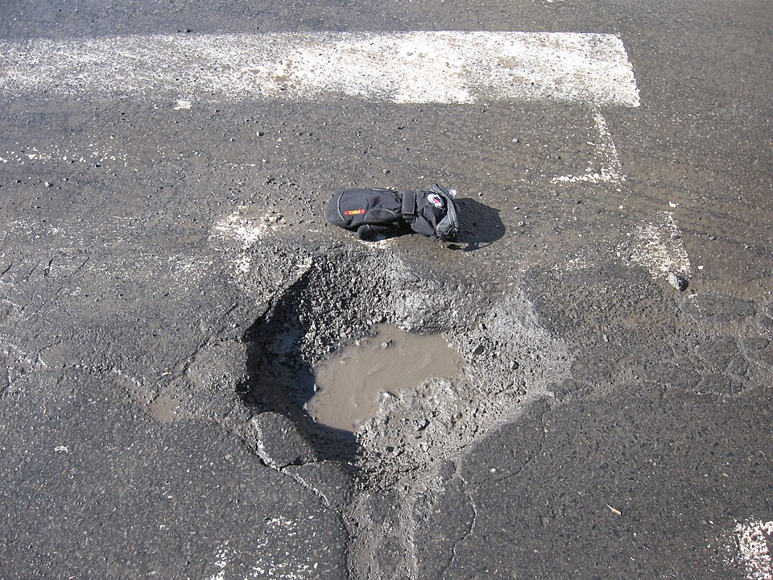
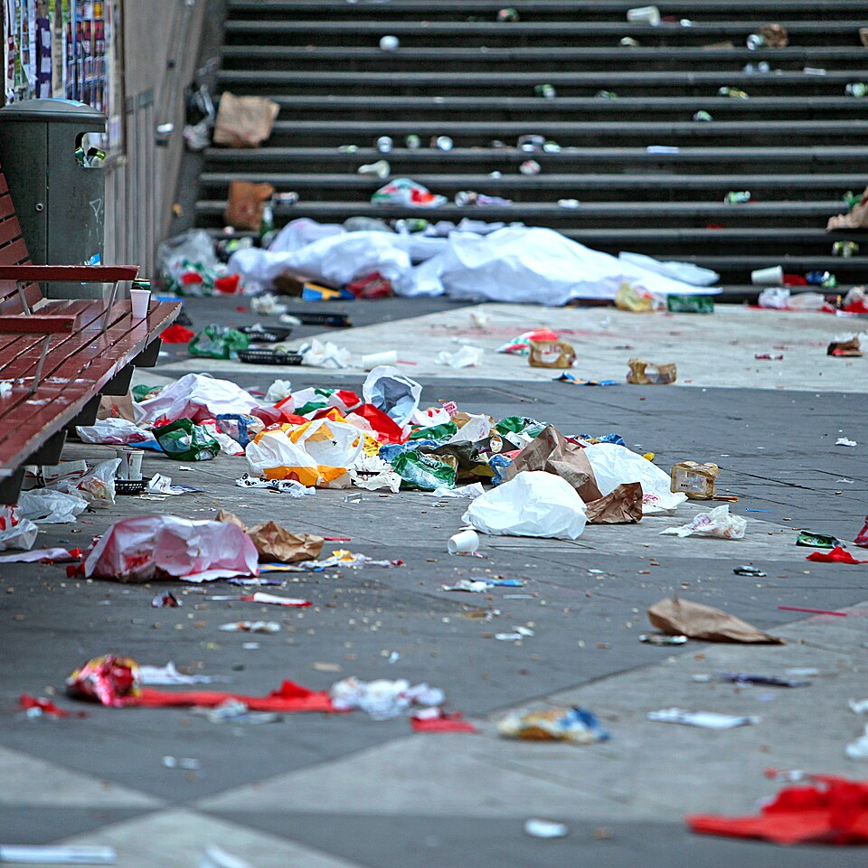
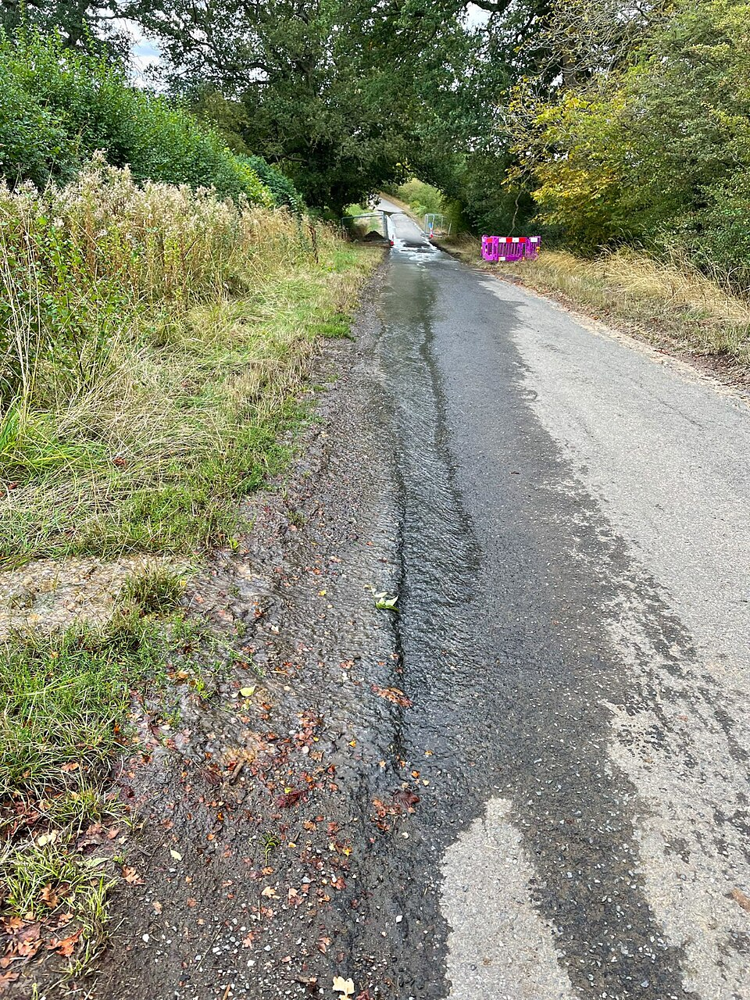
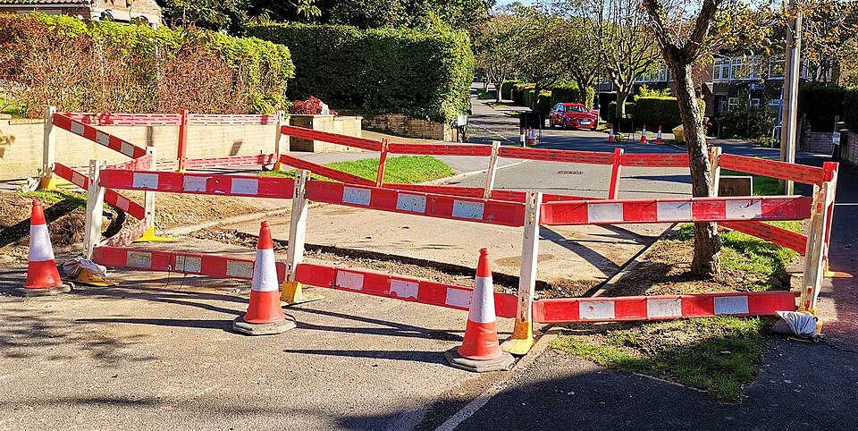

Fix My City empowers students and citizens to submit municipal complaints—from hazardous potholes and broken streetlights to water leaks and garbage dumping. City departments review, dispatch field crews, and resolve tickets transparently.
Real authentic complaints reported across Shri Ramdeobaba University campus and Katol Road, Nagpur.

Large asphalt crater right outside the main college entrance on Katol Road. Student two-wheelers and college buses are swerving into oncoming traffic to avoid it.
Pedestrian walkway between the RBU Boys' Hostel and Tech Park has been completely dark for 3 nights. Poses a security and safety concern for evening students.


Underground municipal freshwater supply line ruptured. Clean water gushing across the road causing puddles and water wastage near the indoor sports complex.
OpenStreetMap satellite coordinate grid centered at Katol Road, Gittikhadan, Nagpur (21.1764° N, 79.0617° E).
Select any ticket below to inspect its verified 4-stage municipal progression timeline and field dispatch updates.
Opposite Gate 2, Gittikhadan, Katol Road, Nagpur

AFTER (NMC VERIFIED FIXED)Resolution Audit: Waste cleared, bins sanitized with bleaching powder, and perimeter fencing cleared by Sanitation Crew #4.
City department view for Nagpur Municipal Corporation officers and campus maintenance teams.
| Ticket # | Category | Incident Title & Location | Department | Status | Action |
|---|---|---|---|---|---|
| #FMC-101 | Roads |
Deep Hazardous Pothole near Main Entrance Gate
Main Gate, Ramdeobaba University, Katol Road
|
NMC - PWD | OPEN | Inspect |
| #FMC-102 | Lighting |
Series of 4 Dark Streetlights on Campus Hostel Pathway
Hostel & Temple Pathway, Ramdeo Tekdi, RBU
|
MSEDCL & NMC Electrical | IN PROGRESS | Inspect |
| #FMC-103 | Waste |
Overflowing Garbage Bins outside Campus Gate 2
Opposite Gate 2, Gittikhadan, Katol Road
|
NMC Solid Waste & Sanitation | RESOLVED | Inspect |
| #FMC-104 | Water |
Drinking Water Supply Pipeline Leak near Sports Complex
Sports Complex Road, Ramdeobaba University
|
Orange City Water (OCW) & NMC | IN PROGRESS | Inspect |
Your grievance has been registered directly into the municipal portal queue (Nagpur Municipal Corporation - PWD Zone).
Our automated dispatcher has notified field inspectors. An SLA response is committed within 48 hours.
Done / Return to FeedMain Gate, Ramdeobaba University, Katol Road, Nagpur
Category: Roads & Potholes
Assigned Department: NMC PWD Division
Reported By: Aman Sharma (CSE Dept)
Current Stage: Verified by Dharampeth Zone Engineer; asphalt cold-mix repair crew queued for dispatch.
Hostel & Temple Pathway, Ramdeo Tekdi, RBU
Category: Street Lighting
Assigned Department: MSEDCL & NMC Electrical Works
Assigned Officer: Junior Engineer K. B. Patil
Current Stage: Transformer cable fault identified; maintenance bucket truck on site replacing 70W LED ballasts.
Opposite Gate 2, Gittikhadan, Katol Road, Nagpur
Category: Waste Management
Assigned Department: NMC Solid Waste & Sanitation
Assigned Officer: Health Officer S. B. Joshi
Current Stage: Compactor vehicle #12 collected all debris; pavement bleached and cleared.
Sports Complex Road, Ramdeobaba University, Nagpur
Category: Water & Drainage
Assigned Department: Orange City Water (OCW) & NMC
Assigned Officer: Distribution Engineer M. G. Rao
Current Stage: Sluice valve isolated; excavation completed to clamp 150mm cracked distribution pipe.